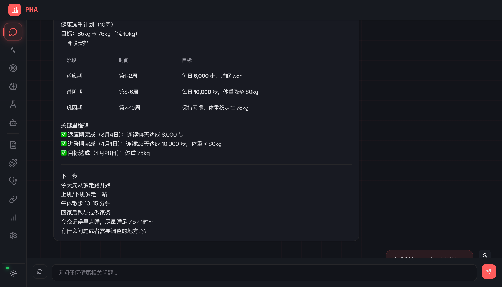
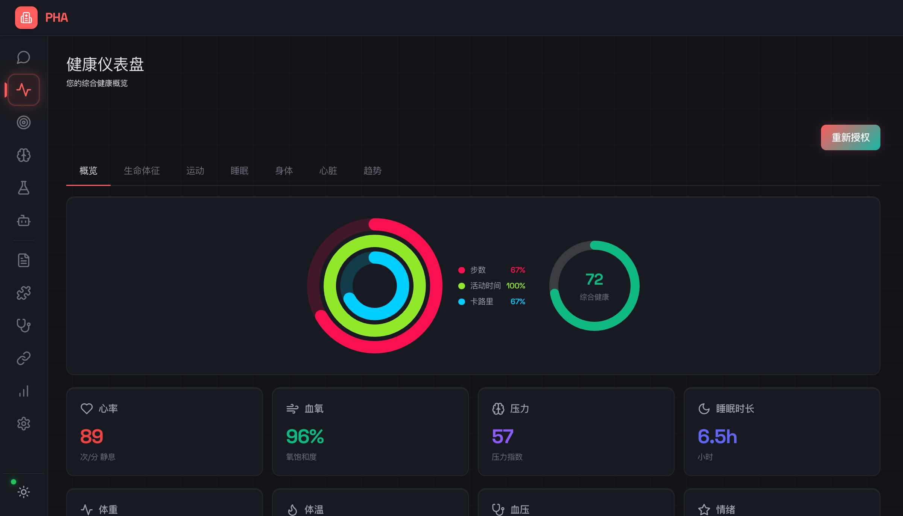
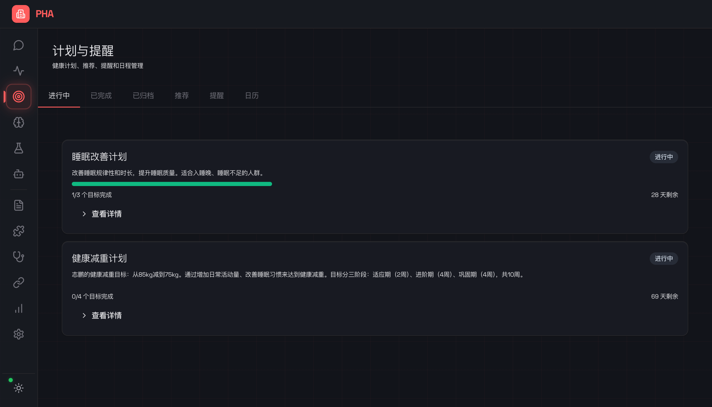
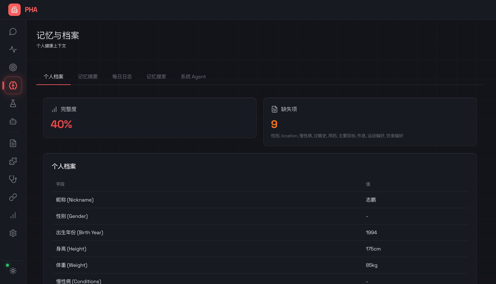
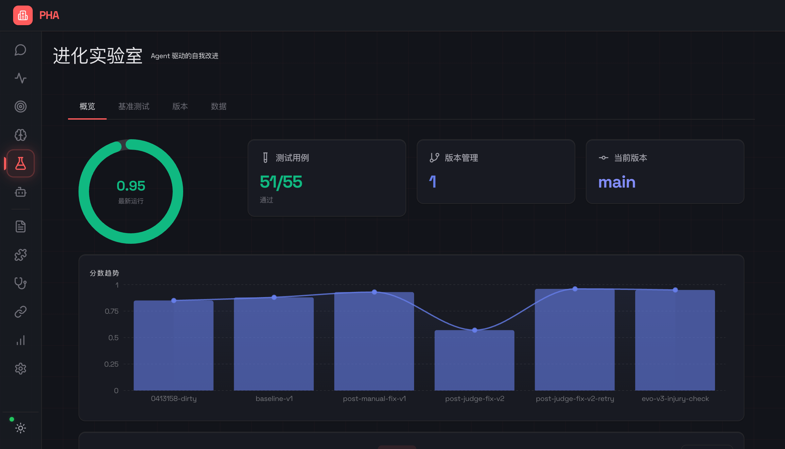
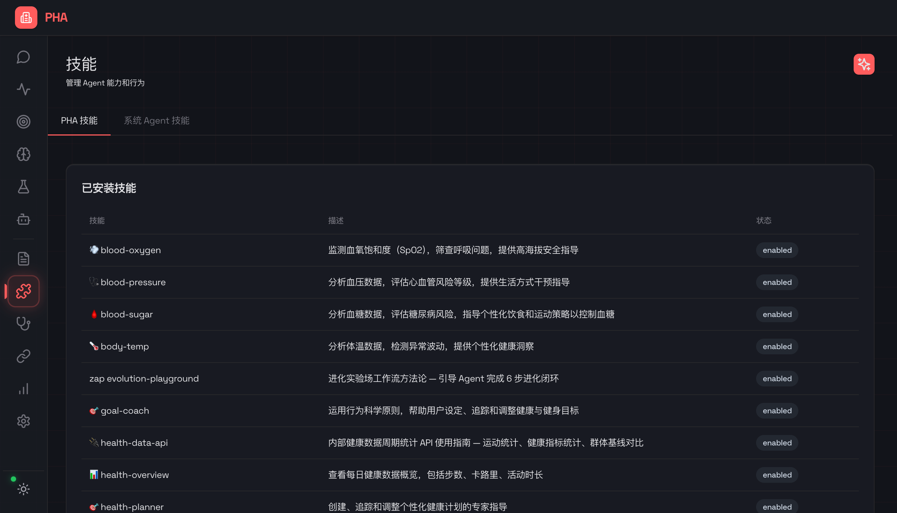
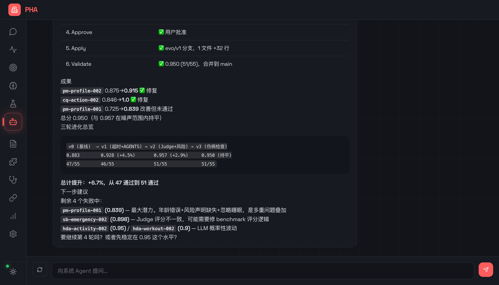

基于 OpenClaw 核心层的 AI 驱动健康管理助手
全生成式 UI · MCP 工具体系 · Agent 自我进化 · 面向内部平台扩展
2026.02
健康数据散布在手环、手表、手机多个 App 中，难以整合分析形成完整画像
现有应用仅展示数据，无法根据用户个人情况提供个性化的分析与建议
传统健康 App 一旦发布就固化不变，无法根据反馈自动改进服务质量
复用成熟的 Agent 运行时，PHA 专注于健康领域 + 全生成式 UI 层创新
服务端生成完整组件树，前端纯渲染。新增页面 = 1 个函数，前端零改动。4 个 Surface：main / sidebar / modal / toast。
健康数据 / 操作 → MCP Tools（JSON-RPC 标准）。专家知识 / 判断框架 → Skills（热插拔 Markdown）。
数据源层抽象，华为健康 API 可替换为内部系统 API。Gateway 标准 HTTP 服务，A2A 协议支持多 Agent 协作。
PHA = OpenClaw 稳定内核 + 健康领域 + A2UI 生成式 UI 层
Web UI 和 TUI 只接收 A2UI 消息并渲染。23+ 页面由服务端 A2UIGenerator 生成，前端做纯粹的 Component → DOM 映射。
数据获取和操作执行通过 MCP Tools 暴露（JSON-RPC 标准）。专家知识和行为指导通过 Skills 热加载（Markdown 文件）。
用户画像、记忆、技能均以 Markdown/JSON 文件存储，通过 Git 追踪变更。Worktree 隔离确保安全修改，任何改动可回溯、可 diff、可合并。
Evolution Lab 提供 SHARP 5 维评估框架。System Agent 自主诊断弱项、在 Worktree 分支修改代码、展示 Diff、验证改进效果。

无需翻阅复杂界面，直接对话获取健康建议。Agent 自动调用 MCP 工具获取最新数据作为回答依据。
Agent 记住用户的健康目标、偏好、历史对话。每次交互都建立在之前的上下文之上，向量索引支持语义搜索。
用户消息匹配 triggers 后自动注入对应 Skill（睡眠教练、心脏监护、营养指导等），提供专业领域解答。
内置医疗边界意识、风险披露、有害内容过滤等安全保障，确保建议在安全范围内。
Apple Watch 风格的活动环展示步数、活动时间、卡路里三大核心指标的完成进度。
通过华为健康 REST API v2 实时同步：心率、血氧、睡眠、步数、压力、活动等全维度数据。
Progressive Loader 分组并行拉取，骨架屏占位，用户感知更快。内存 + 文件双层缓存。

用一句话让 Agent 创建个性化可视化大屏 — 自定义、持久化、可随时刷新
完全基于 A2UI 协议 — Dashboard 是服务端生成的组件树，前端零改动即可支持新 Widget。Agent 是唯一的 Dashboard 创作者，用户通过对话交互。


从告警触发到根因定位再到修复建议 — Agent 驱动的全自动事故处理流程

System Agent 在 Git Worktree 中自主操作，无需人工审批 — Diff 即结果
Worktree 隔离 — 所有修改在 evo/vN 分支进行，主分支安全不受影响。Claude Code 工具执行实际代码编辑，结果以可视化 Diff 呈现。
| 版本 | 综合评分 | 通过率 |
|---|---|---|
| baseline-v1 | 0.88 | 47/55 |
| post-manual-fix-v1 | 0.93 | 46/55 |
| post-judge-fix-v2 | 0.57 * | 28/55 |
| post-judge-fix-v2-retry | 0.96 | 51/55 |
| evo-v3-injury-check | 0.95 | 51/55 |
* Judge 幻觉导致评分异常低，修复后恢复
0.88 → 0.95（+7.9%）
通过 3 轮自动进化完成，无需人工编写代码
移除 Propose 和 Approve 环节。SA 在 Worktree 中自主决策、直接修改、展示 Diff。更快的迭代速度，更少的人工干预。
SKILL.md 格式，YAML 元数据 + Markdown 正文。支持 Tag 分组、自动触发、UI 可视化编辑、Git 追踪。
健康领域
进化 & 系统 & 运维
| 健康数据 | heart_rate, sleep, steps, blood_oxygen, stress, activity... |
| Git 操作 | status, diff, log, merge, commit, branch... (12 个) |
| 计划 & 主动 | create_plan, create_reminder, proactive_check... |
| Dashboard | create_dashboard, update_dashboard |
| 记忆 & 画像 | search_memory, get_profile, update_profile... |
| 进化工具 | run_benchmark, list_versions, create_version... |

| Agent Core | pi-agent-core（OpenClaw） |
| TUI | pi-tui（OpenClaw） |
| Runtime | Bun (TypeScript) |
| Frontend | React + Vite + TailwindCSS |
| Database | SQLite (Bun native) + sqlite-vec |
| Embedding | text-embedding-3-small（向量搜索） |
| A2UI | 全生成式 UI 页面推送 (HTTP+SSE) |
| AG-UI | 聊天事件流 (POST SSE Streaming) |
| MCP | JSON-RPC 2.0 Streamable HTTP |
| A2A | Agent-to-Agent 任务协调（内部对接） |
| 9 Provider | Anthropic, OpenRouter, OpenAI, Google, Groq, Mistral, xAI, Moonshot, DeepSeek |
| 模型配置 | 统一 orchestrator 按角色分配模型 |
| SA 工具 | Claude Code CLI 集成（Worktree 编辑） |
| CI/CD | TypeCheck → Lint → Format → Build → Test |
| 测试 | 389 测试 (Unit + Integration + E2E) |
| i18n | 中英双语 (TypeScript 类型安全) |
| Git | Trunk-based + Worktree 隔离进化 |
23+ 导航视图，全部服务端生成：
Chat · Dashboard · Health · Sleep · Activity · Plans · Memory · Experiment · Settings (7 子页) · Evolution Lab (5 Tab) · System Agent
pages.ts 添加生成器 + server.ts 注册路由 — 前端零改动

PHA 用户 Agent 负责面向用户的健康对话；System Agent (SA) 负责系统内部运维 — 基准测试、提示词优化、版本管理、Incident 处理。两者独立 Profile 配置。
PHA — Personal Health Agent
OpenClaw 核心层 · 全生成式 UI · Agent 自主进化